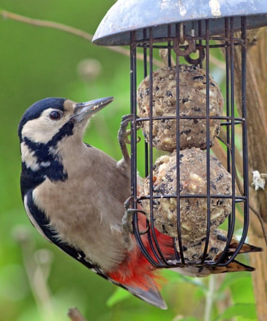

T he estate agent called it a conservatory, but that suggests a level of polished Edwardian elegance that isn’t borne out in reality. Rather, the structure is an extension to the extension, in the manner of many rural homes. It is a flexible space – and the various domestic functions of workshop, greenhouse and studio ebb and flow as the seasons rotate and the distinctions of indoors and outdoors fluctuate.
In winter, it acts as a sanctuary for those outdoor potted plants that can’t tolerate frost, and also as a refuge for the occasional wood mouse that sneaks in under the back door. I allow the mice a certain licence, but sanctions result if they decide to invade the kitchen.
Adult great spotted woodpeckers ‘are regular, if nervous, visitors to our feeders’.Photograph: John Gilbey
Summer, and an impulse purchase at a National Garden Scheme event, has brought a series of large pots to one of the broad, sunlit windowsills. This row of tomato plants, which began as foot-high newcomers, has grown into a green wall of sturdy stems and interwoven limbs. Some of the early-setting fruit have already reached a good size and are clearly an unusual cultivar – although I seem to have misplaced the label during repotting.
With some of the tomato plants still in flower, I opened the back door early this morning to attract pollinating insects. Just now, I heard a series of unusual noises, which – as those who live in older houses will attest – often presages an expensive intervention. The intermittent knocking was loud and insistent, and seemed to be coming from behind the tomatoes.
Looking into the conservatory, I see the red cap of a juvenile great spotted woodpecker – just visible between the leaves. It moves in an unpractised, lurching flight and fetches up on a window handle, proceeding to attack the wooden frame in an attempt to escape. I walk slowly towards it in the hope of opening the window.
Spooked, it flies upwards and around me with a whirr of wings, escaping cleanly through the open door. The adult birds are regular, if nervous, visitors to our feeders and it is reassuring to know that they have raised at least one offspring this season – but perhaps the notion of a shared space has gone too far.